Retain & document
A visible feature may be acceptable for a particular use only after the applicable evidence and rules are checked. No universal crack or knot tolerance.
Loading saved evidence…
RECLAIMED TIMBER RESEARCH
RECLAIMED TIMBER / RESEARCH INDEX
Two AI workflows, two Timber Shelter videos and two further case studies.
01 / RECLAIMED BEAM 115200
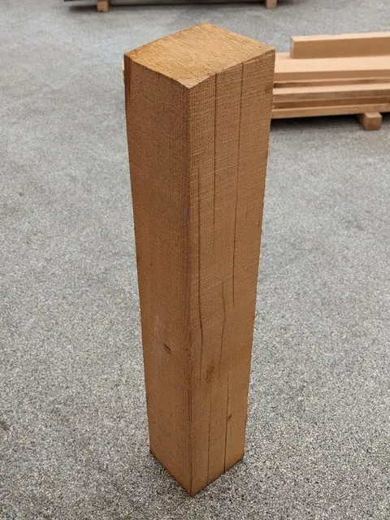
Drag or use arrow keys to rotate
Visual AI makes incomplete timber listings inspectable. The evidence then meets the requirements for reuse—and changes what a piece can supply.
A few seller photographs, awkward viewpoints, nominal dimensions and descriptions. Hidden surfaces and internal condition remain unknown.
Identity, geometry, condition and a suitable reuse pathway. Seattle’s timber provisions help define the questions before a material is assigned to a building.
Earthwise 99397 · Cedar slab
Two source photographs. One saved VGGT scene. Choose a stage to inspect its actual output.
Saved research outputs, September 2026. Selecting a stage changes the evidence on view; it does not run a new model.
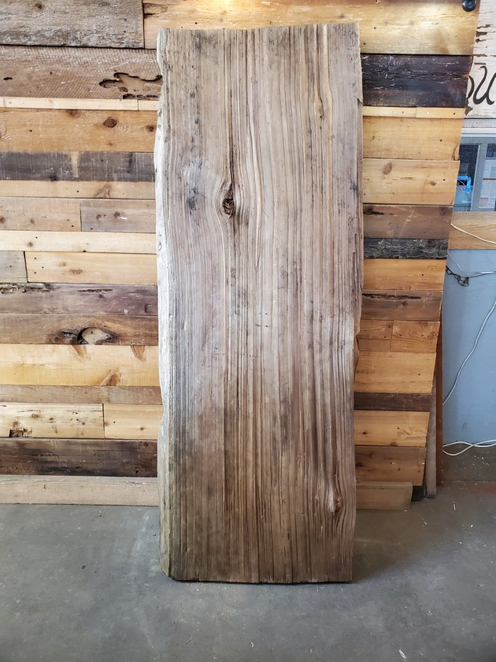
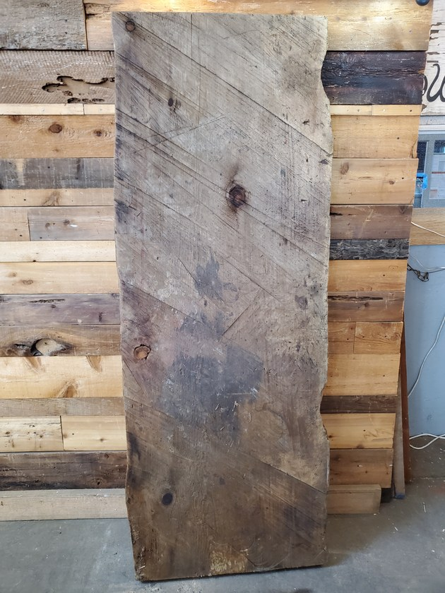
The seller lists 127 × 787.4 × 2082.8 mm. These are seller-reported dimensions; they have not been applied as a metric scale to this point cloud.
The photographs do not establish the unseen faces, internal condition or a verified physical identity across views.
View 1 contributes 7,414 retained points; view 2 contributes 7,872. The combined 15,286 points retain their original VGGT common-scene placement. No new registration, hole filling or unseen geometry was created for this presentation.
Download the extracted process recordA second specimen: Earthwise 115200, a rough-sawn beam chunk. This recorded experiment connects a visual candidate to a proposed usable interval.

Choose one of the two saved demand probes.
3 mm preparation kerf between retained and excluded intervals.
Before trim: feasibleAfter trim: infeasible
The 900 mm demand no longer fits the proposed 828.24 mm usable interval.
The research’s Seattle 2021 code map separates material eligibility, grading, design properties and member checks. Section [W] 2303.1.1.3 addresses qualifying used solid-sawn dimensional lumber in good condition and without decay. A large beam cannot simply be assigned that fallback from its photographs.
The 20 mm buffer is a research assumption, not a crack allowance supplied by this clause. The 600/900 mm tests are isolated allocation probes; this trim was not applied to the three final building allocations.
A required span becomes harder to supply when usable stock gets shorter. The design workflow must then compare another source, a different span or an allowed support strategy—and seek more evidence where needed.
This is the proposed connection between the two research lines. The saved material probes and building studies below are separate records, not one demonstrated end-to-end run.
Follow the design AgentInspect the detailed material viewersSeller photographs arrive with dimensions and descriptions.
Geometry, condition and usable length still need evidence.
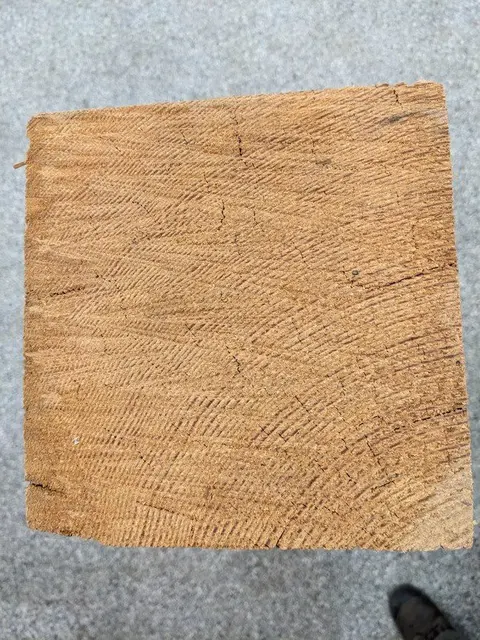
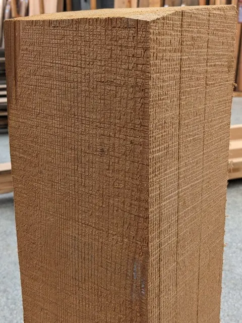
Archived seller photographs and fields · 11 September 2026. Open the source link for the actual website; this card is not a webpage screenshot.
SOURCE → MASK → SPATIAL EVIDENCE
Start with the photographs and masks. Add the saved views one at a time, then compare their colored points with the existing photo-patch atlas.
THREE INPUTS, THREE MASKS
Each black-and-white mask identifies timber pixels in its own source photograph. VGGT spatial evidence and photo colors remain linked to those view IDs.
A / SPATIAL EVIDENCE
Drag to rotate · wheel to zoom · arrow keys to rotate. Photo colors are the default. View-ID colors are only a provenance key, not defects or depth.
B / APPEARANCE EVIDENCE
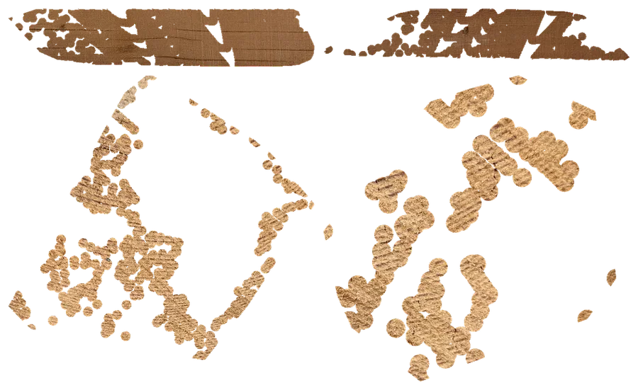
Independent projected patches, grouped by photograph. Transparent areas remain unknown. This saved atlas is not a seamless surface stitch or exact UV map.
These are saved pretrained SAM 2 masks and VGGT observations. Masks preserve per-image foreground evidence. The displayed arrows describe linked evidence records, not a claim that binary masks alone are VGGT's reconstruction input. View-to-view disagreement and partial coverage remain visible. VGGT is not a defect classifier; visible crack candidates and approximate source-length mapping are recorded separately.
Download the source-linked passport ↓CONDITION → DECISION
A crack candidate becomes a documented decision scenario—not an automatic grade or a claim of defect-free timber.
C01 / EXACT SAVED 3D CORRESPONDENCE
18 saved points locate the image candidate. Select a highlighted point, or focus the viewer and press Enter to cycle through the samples.
Orange = C01 correspondence, not measured crack depth. The candidate may also represent grain, a seam or shadow. Missing samples are not a void in the timber.
C01 is an image-space candidate linked to 18 saved 3D samples.
Seattle’s used dimension-lumber pathway has condition and product-scope prerequisites. No numerical crack-depth rule is established for this beam by these records.
Exclude the end region in a conservative research scenario. Not a code-certified rejection or acceptance.
A visible feature may be acceptable for a particular use only after the applicable evidence and rules are checked. No universal crack or knot tolerance.
The saved 115200 demonstration excludes the end region with a 20 mm research buffer.
A 600 mm demand fits the retained 828.24 mm segment; a 900 mm demand does not.
Consider another role or location if its requirements can be met. This is a decision option, not an executed regrading of this stock.
Unknown depth, hidden decay or missing views remain unresolved. Missing points are not proof of missing timber.
ACTUAL SOURCE / TWO SAVED PROBES
115200_001 · one seller-recorded piece · 1,104.9 mm nominal length.
*Approximate photo-to-length mapping from the saved endpoint anchors. The colored overlay is a scenario guide, not a measurement of a crack or a scaled scan. The ledger below gives the exact saved intervals, including kerf.
Open this source listing ↗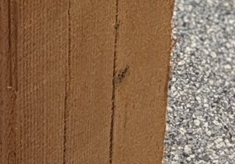
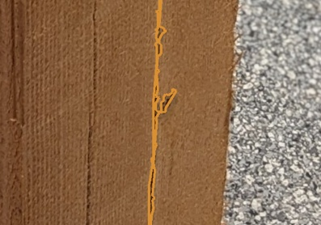
SAVED CONTROLLED EXPERIMENT / 115200_001
20 mm avoidance buffer · 3 mm preparation kerf
Source-length mapping uses approximate photo endpoints.
These saved isolated probes were not applied to the three final allocations. Retaining a segment does not certify its condition.
Buffer, kerf, machining allowance and fabrication tolerance are different quantities. No universal defect tolerance is inferred from the code.
Possible actions depend on defect type, location, product category and proposed use. The five choices above are a decision framework; only the displayed 600 / 900 mm probes are executed saved experiments.
Defect-to-rule evidence matrix ↓ · Saved Seattle code-pathway research ↓ · Exact interval and result records ↓FROM USABLE STOCK TO CUT PARTS
Actual source intervals from the saved Case 1 run. Multiple parts can come from the same board; surplus remains separate from installed parts.
Lengths in mm. Crosscut kerf is 3 mm. Section machining is accounted separately; a length cut does not silently change the stock section.
SOURCE-LINKED USABLE INVENTORY
A compact view of the material pool. The passport keeps the evidence; the inventory supplies the next design scenario.
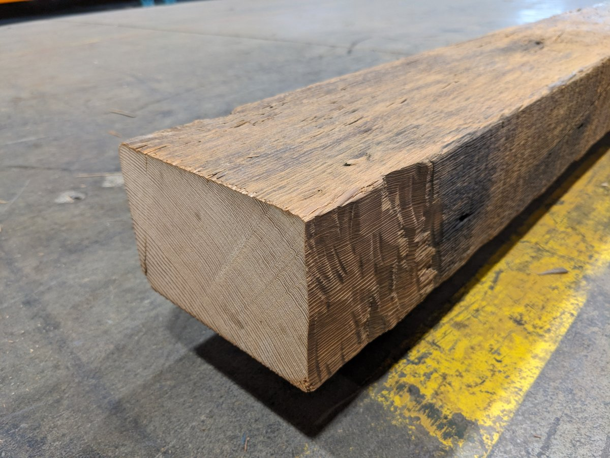
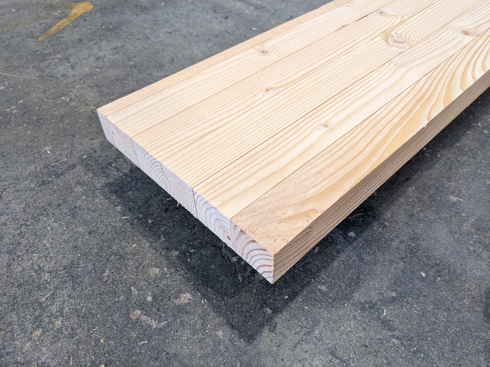

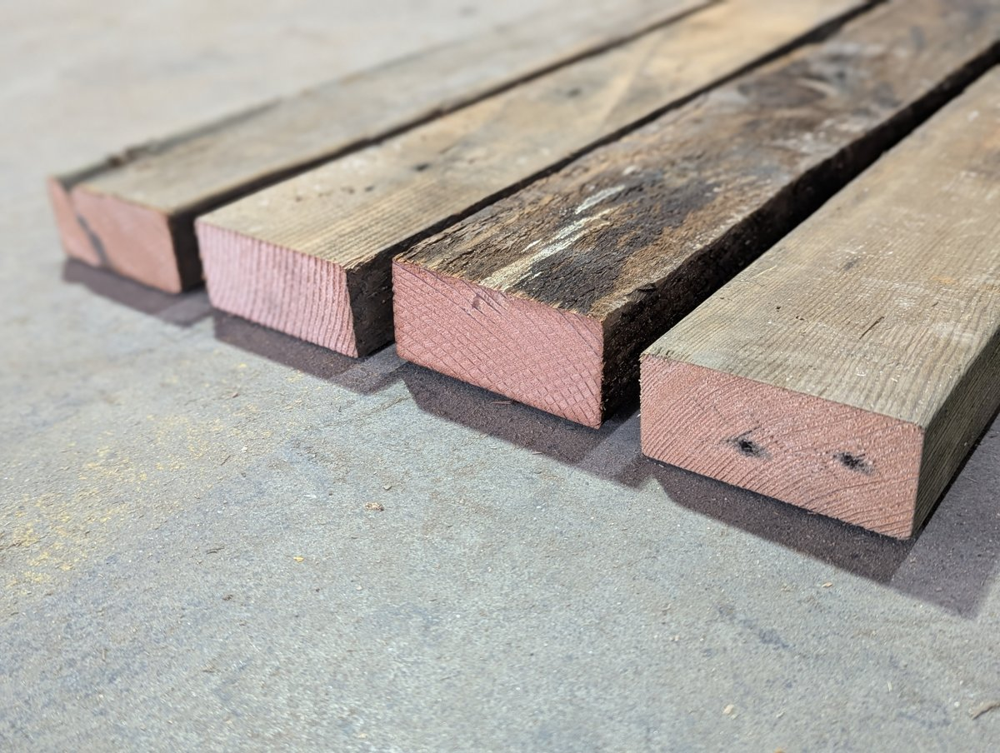
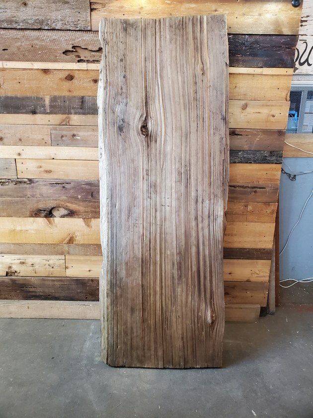
Designed for repeatable updates as seller stock changes. This public-facing preview uses a saved snapshot, not a continuously polling live feed. New evidence can enter a new inventory version; accepted case runs keep their original snapshot.
Continue to designer + agent →02 / TIMBER SHELTER
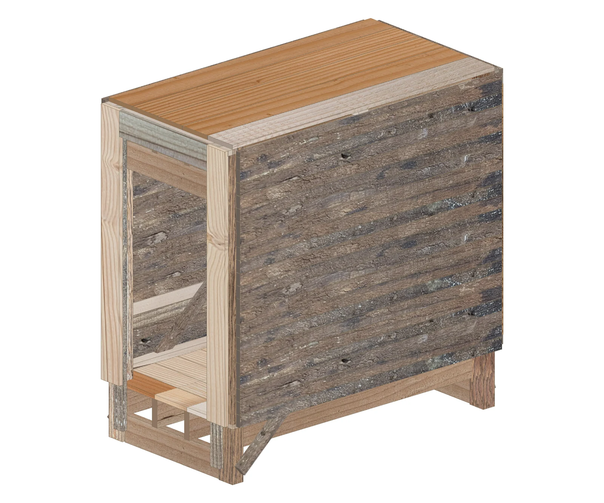
The Agent interprets what you want to preserve and what may change. Material allocation and structural analysis test those choices. The designer reviews the consequences.
Three saved, real API interpretations of a controlled pavilion brief. Switch the request to see the recorded constraint change.
Keep the reading pavilion interior completely open.
Do not introduce internal supports.
Do not splice members.
Saved API interpretation · 22 September 2026
The controlled 2360 × 1270 × 2050 mm envelope stays fixed in these parser comparisons.
An internal support line is excluded from the design choices. The Agent cannot trade away this requirement to make stock fit.
The language model parsed the requests into the existing Brief/Decision schema. Deterministic validation gave hard constraints priority over preferences. It did not calculate structural values or select stock itself. These request comparisons do not prove that the later three buildings were generated by these exact turns.
Download the original prompts and extracted constraintsThe research separates what a designer asks for from what the material and analytical model can support.
The saved Shelter brief specifies Seattle, a public-exhibition research use and no internal columns. These establish the context for loads and design choices.
Read the confirmed briefThe code map identifies the reuse pathway and missing condition or grading evidence before strength properties can be relied on.
Read the saved code mapSections, spans, supports, connections and recorded loads enter the structural model. Its results become evidence for a revision.
See an actual structural revisionThese are documented research inputs and mappings. They are not evidence of autonomous code retrieval, permit approval or a complete compliance check.
Contour Bench · A saved geometry adaptation shows how stock section and layer thickness change the longitudinal extent of a form.
Both versions share one camera and scale. Actual saved polygons; no interpolated iterations.
The saved geometry diagrams load when this chapter opens. Numerical comparisons remain available below.
The selected section thickens each layer and increases station pitch. The original thin-section option did not cover demand in the saved bounded pattern menu. Local placement repairs resolve collisions.
All 716 source part IDs and all 1,264 original contact pairs. The longitudinal extent grows by about 2.44 m while the contour’s organization remains traceable.
A complete recorded allocation to 120 source bars. This adaptation was computed by geometry and allocation tools; it is not a recorded LLM generation or a structural certification.
The source model’s physical units were unconfirmed. These comparisons use its recorded working scale, not a measured built object. The original and adapted geometries retain their saved coordinates and bounded placement changes.
Timber Shelter · The saved backing revision changes wall rails and studs and adjusts roof clearance. The enclosure and successful allocation remain recorded.
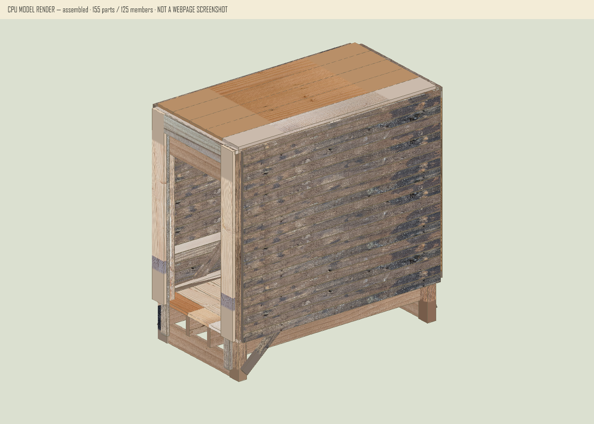
The positive Y wind case shows less displacement after the revision. Gravity displacement increases, so the result must be read by load case.
| Load case | Before | After |
|---|---|---|
| Positive Y wind | 56.178 | 11.793 |
| Dead load | 3.065 | 13.682 |
| Dead + positive Y wind sensitivity | 56.240 | 18.052 |
155 installed parts, 87 source bars. Analysis status: completed conceptual. Six physical joint details remain unresolved.
Inspect all recorded load-case changesThe next design request can target the evidence that matters most. A material concern can send the design back to another source, a shorter span or an allowed support.
The page distinguishes saved API interpretations, material experiments and computed building revisions. Their end-to-end orchestration is a research direction, not a claimed completed autonomous run.
HUMAN INTENT + RECORDED CONSTRAINTS
These films present saved final geometry in stages. They are illustrated summaries, not historical geometry iterations.
Edited paraphrase of saved instructions and decisions. Final geometry shown in presentation stages; not historical iterations, a verbatim transcript or a live API response.
CONSTRAINT-BASED OPTIMIZATION
The existing pattern-based MILP matches demand to finite stock. The diagram shows constraint and correspondence layers, not a deep-learning model.
Scroll the diagram horizontally to read its labels.
Loading a saved source example…
ALLOCATION — MUSIC ONLY
Case 1 / the existing saved stock → cut part → building sequence. No material-processing introduction and no narration.
Saved-result allocation visualization. Not a validated physical assembly sequence.
One source → several installed positions
Select a cut part or click the model. Its original interval and parent board remain attached to its installed position.
Scroll the diagram horizontally to read its labels.
Select a source to follow all its parts.
Source-linked representative appearance; not a measured UV scan.
SAVED LOAD CASES / PRELIMINARY ELASTIC RESPONSE
Saved Karamba response. Highlight: maximum displacement.
Scroll the diagram horizontally to read its labels.
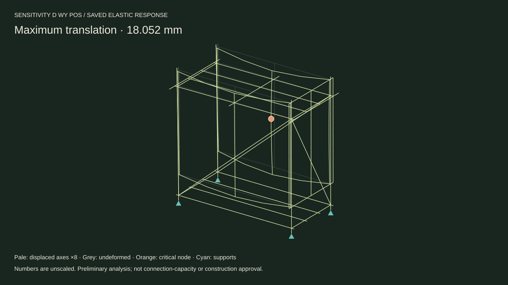
See how the same pipeline adapts to a contoured bench and an open pavilion.
Explore the case studies →01 / TIMBER SHELTER
Illustrated summary of the saved brief and design decisions.
02 / TIMBER SHELTER
Saved allocation replay with instrumental music.
RECLAIMED TIMBER / CASE STUDIES
Each study starts with the same recorded inventory. One tests how timber shapes a curve. The other tests how it sets a span.
| Recorded quantity | Case 1 | Case 2 | Case 3 |
|---|
Residual length belongs to selected stock. Untouched inventory is separate; surplus cut parts are not installed parts. Independent scenarios do not consume one another's stock.
CASE 01 / Mixed sections / multiple building roles
Connect framing, enclosure and supported seams within a finite stock pool.
BRIEF → DECISION
A small public exhibition shelter
Edited paraphrase of saved instructions and decisions. Final geometry shown in presentation stages; not historical iterations, a verbatim transcript or a live API response.
USER Design a small public-exhibition timber shelter in Seattle. Use the recorded reclaimed stock; keep the interior free of columns.
AGENT The saved brief identifies Seattle and the 2021 Seattle Building Code. A specific site, exposure and permit scope still need confirmation; today's weather is not a design load.
USER Allow cutting and supported jointing. Include the approved visible braces and backing in the material ledger.
AGENT Saved result: 155 installed parts from 87 source bars. Review the saved load cases and critical backing response separately from connection capacity.
Allocated braces and revised backing are represented in the saved building; loads from covering parts transfer to framing.
ALLOCATION LOGIC
One inventory supplies a hierarchy of parts, rather than one repeated component.
Original pattern-based MILP; authored/adapted geometry enters as demand. No new solve is performed by this page.
Saved allocation record ↓ALLOCATION PLAYBACK
Music only. Saved source-to-part-to-member relationships; no new allocation.
Allocation visualization, not a validated physical assembly sequence.
PRELIMINARY ELASTIC RESPONSE
Select a saved load case. Displacement values are unscaled; the drawing magnification is explicit.
Scroll the diagram horizontally to read its labels.
Four fixed post bases; declared simple bearings and fork restraints; three allocated braces. Foundation, fasteners and physical joint capacity remain unverified.
Allocation: ALLOC_20260929T103241_f1495f
Analysis: KARAMBA_BUILDING_20260929T103501_27f3a8
Case 1 building loads, Case 2 furniture patch loads and Case 3 pavilion loads differ. Their maximum displacements are not a common-load performance ranking.
CASE 02 / Straight strips / broad-face overlap
Retain the changing contour while fitting the complete demand to real stock quantities.
BRIEF → DECISION
A continuous seat for resting and gathering
Edited paraphrase of saved instructions and decisions. Final geometry shown in presentation stages; not historical iterations, a verbatim transcript or a live API response.
USER Keep the approved contour. Use straight strips with direct overlap; do not replace them with curved plywood ribs.
AGENT The thin-section stock cannot cover the full demand in the saved bounded pattern menu. A 38.1 × 88.9 mm family is available; section and spacing must change together.
USER Approve the full-stock version and the 125 mm computational minimum. Preserve the accepted local prototype.
AGENT Saved result: 716 strips, one shared stock ledger. Compare self-weight, central TOTAL 1 kN and eccentric TOTAL 1 kN under the accepted R03 connections.
38.1 × 88.9 mm sections and 76.2 mm station pitch replace the thin prototype family; all 716 strip IDs are retained.
ALLOCATION LOGIC
The stock section changes the repeating pitch and therefore the overall length.
Original pattern-based MILP; authored/adapted geometry enters as demand. No new solve is performed by this page.
Saved allocation record ↓ALLOCATION PLAYBACK
Music only. Saved source-to-part-to-member relationships; no new allocation.
Allocation visualization, not a validated physical assembly sequence.
PRELIMINARY ELASTIC RESPONSE
Select a saved load case. Displacement values are unscaled; the drawing magnification is explicit.
Scroll the diagram horizontally to read its labels.
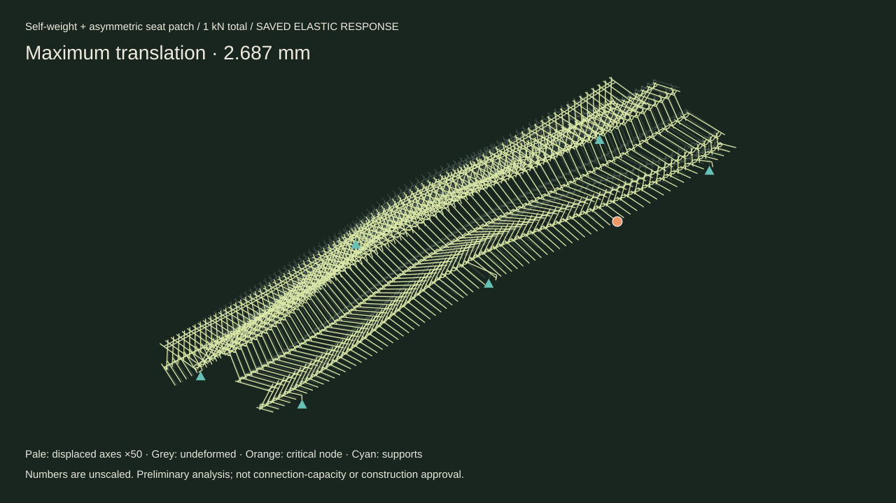
R03: four terminal groups use three non-collinear idealized ties; other groups retain their recorded connections. Six unanchored levelling pads. Fastener capacity and bearing friction are unverified. R02 remains mechanism-diagnosis history.
Allocation: ALLOC_CASE2_FULL_20261003T072129Z_464628f7
Analysis: CASE2_KARAMBA_20261003T084216Z_R03_TERMINAL_TRIANGLES
Case 1 building loads, Case 2 furniture patch loads and Case 3 pavilion loads differ. Their maximum displacements are not a common-load performance ranking.
CASE 03 / Repeated frames / stock-adapted spans
Keep architectural scale and the open pavilion character while coordinating sections, spans and subdivisions.
See how intent, material eligibility and structure enter the design
BRIEF → DECISION
An open, gable-roof gathering space
Edited paraphrase of saved instructions and decisions. Final geometry shown in presentation stages; not historical iterations, a verbatim transcript or a live API response.
USER Use the pavilion as a design reference. Keep the open sides and gable roof, but adapt dimensions and framing to the full inventory.
AGENT This is an independent inventory scenario, not Case 2 leftovers. Coordinate spans, sections and subdivisions; include angled-cut blank allowances.
USER Preserve architectural scale and trace every installed member back to real stock. Use explicit connections, supports and load assumptions.
AGENT Saved result: 98 installed members. The preliminary wind response requires anchorage assumptions; site-specific compliance and physical anchor capacity remain unresolved.
The stock-adapted working layout retains repeated gable frames; angled-end allowances are included in cutting blanks.
ALLOCATION LOGIC
Inventory informs architectural dimensions before allocation checks the selected layout.
Original pattern-based MILP; authored/adapted geometry enters as demand. No new solve is performed by this page.
Saved allocation record ↓ALLOCATION PLAYBACK
Music only. Saved source-to-part-to-member relationships; no new allocation.
Allocation visualization, not a validated physical assembly sequence.
PRELIMINARY ELASTIC RESPONSE
Select a saved load case. Displacement values are unscaled; the drawing magnification is explicit.
Scroll the diagram horizontally to read its labels.
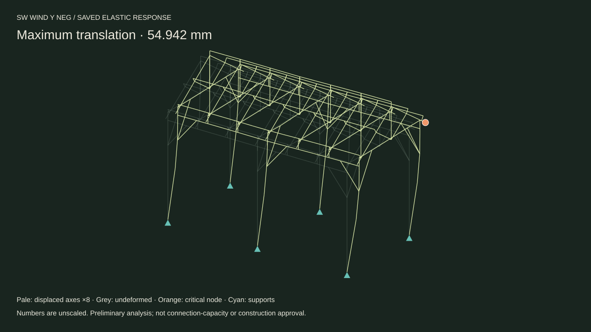
R02 pinned-cleat connection model and six conceptually anchored pinned foundations. Wind cases require unverified anchorage; roof covering, foundation design and joint capacity are unresolved.
Allocation: ALLOC_CASE3_PAVILION_20261005T095835Z_bd90274c
Analysis: CASE3_KARAMBA_20261005T101702Z_PINNED_CLEATS_R02
Case 1 building loads, Case 2 furniture patch loads and Case 3 pavilion loads differ. Their maximum displacements are not a common-load performance ranking.